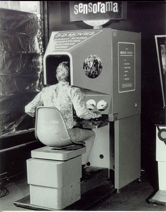
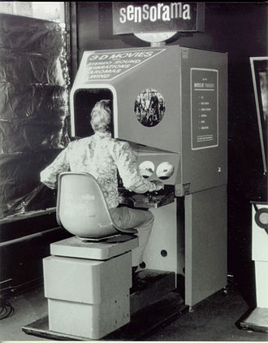

Before 1950s
The earliest mention of the idea of virtual reality came from Stanley G. Weinbaum's short story "Pygmalion's Spectacles". it involve a google-based virtual reality system which also provide the sense of smell and touch.

[1] (Willis 2012)
[1] (Willis 2012)
1950
Morton Heilig wrote about his idea of an "Experience Theatre", which would include all the senses to interact and engage with the viewer.
1962
Morton Heilig built the Sensorama, which is the prototype of the "Experience Theatre". Multiple senses could be engaged:
Sight
Sound
Smell
Touch

[2] (Sensorama 2017)

[2] (Sensorama 2017)
1968
Ivan Sutherland created what was widely considered to be the first head-mounted display system in the world with Bob Sproull (his student)
[3] (Spence 2016)
[3] (Spence 2016)
1978
MIT built a virtual reality system named Aspen Movie Map and it is a crude virtual simulation of Aspen, Colorado (a place in USA).
User can wander the streets in 3 modes
Summer
Winter
Polygons (3D model)
[4] (David 2010)
[4] (David 2010)
1982
Atari, a company that is a pioneer in arcade games founded a research lab for virtual reality, but it was closed in 1984 due to Atari Shock
However its hired employees kepted working on their researches and development and became the pioneer of the rescent VR techonology
Tom Zimmerman
Scott Fisher
Jaron Lanier
Brenda Laurel

[5] (Atari, Inc. 2017)
[5] (Atari, Inc. 2017)
1985
Jaron Lanier founded the company VPL Research, they invented VR device such as:
The Data Glove
The Audio Sphere
VPL licensed the Data Glove technology to Mattel and they made an accessory named "Power Glove" for the Nintendo Entertainment system.
[6] (Power glove 2017)
[6] (Power glove 2017)
1987
Jaron Lanier created the term 'virtual reality'.
1991
The Cave was created by Carolina Cruz-Neira, Daniel J. Sandin and Thomas A. DeFanti from the Electronic Visualization Laboratory, it is the first cubic immersive room in the world!

[7] (Electronic Visualization Laboratory 2017)
[7] (Electronic Visualization Laboratory 2017)
1991
Sega announced the Sega VR headset designed for arcade games and its Mega Drive console. It uses inertial sensors which is able to track the movement of the user's head.
Other features also includes:
Visor
Stereo headphones

[8] (Hill 2014)
[8] (Hill 2014)
1991
Virtuality was launched, it is the first mass-produced multiplayer online VR entertainment system. It was released in many countries. It cost up to $73,000 per multi-pod Virtuality system. With the help of its headsets and exoskeleton gloves, it can be consider as the first 'immersive' VR experience.
[9] (Virtuality (gaming) 2017)
[9] (Virtuality (gaming) 2017)
1992
Louis Rosenberg created the Virtual Fixtures system, using a full upper-body exoskeleton, enabling a physically realistic virtual reality in 3D!
It is the first true augmented reality experience enabling sight, sound and touch.
[10] (Virtual fixture 2017)
[10] (Virtual fixture 2017)
1994
QuickTime VR was released by Apple, which actually was not able to represent virtual reality as they are just displaying 360 photographic panoramas.
[11] (QuickTime VR Panorama of NASA Spirit's Landing Site on Mars 2004)
[11] (QuickTime VR Panorama of NASA Spirit's Landing Site on Mars 2004)
1995
Virtual Environment Theater, produced by entrepreneurs Chet Dagit and Bob Jacobson, is a "CAVE-like" 270 degree immersive projection room and they demonstrated it in front of the public.
1999
entrepreneur Philip Rosedale formed Linden Lab and its aim is to focus on development of VR hardware. It tried to produce a commercial version of "The Rig", its structure include a clunky contraption with several computer monitors that users could wear on their shoulders.
[12] (CREATE VIRTUAL EXPERIENCES 2017)
[12] (CREATE VIRTUAL EXPERIENCES 2017)
2001
Z-A Production developed SAS Cube which is the first PC based cubic room, it was installed in Laval France in April. The SAS library also gave birth to Virtools VRPack.
2007
Google introduced Street View, a service that shows panoramic views of an increasing number of worldwide positions such as roads, indoor buildings and rural areas.
[13] (GOOGLE-STREET-VIEW 2017)
[13] (GOOGLE-STREET-VIEW 2017)
2010
Google features a stereoscopic 3D mode for the street view.

[14] (G. 2015)
[14] (G. 2015)
2010
Palmer Luckey designed the first prototype of Oculus Rift
[15] (ORLAND 2012)
[15] (ORLAND 2012)
2013
Valve discovered and freely shared the breakthrough of low persistence displays which make lag-free and smear-free display of VR content possible.
It was adapted by Oculus and is used in all future headsets.
2014
Valve showed off their SteamSight prototype, it is the precursor to both consumer headset released in 2016, features includes:
1K display per eye
Low persistence
Position tracking over a large area
Fresnel lenses
2014
Facebook purchased Oculus VR for $2 billion.

[16] (Facebook 2017)
[16] (Facebook 2017)
2014
Sony announced Project Morpheus
PlayStation VR (VR headset for PS4)

[17] (PlayStation VR 2017)
[17] (PlayStation VR 2017)
2014
Google announced Cardboard
DIY stereoscopic viewer for smartphones
[18] (Google Cardboard 2017)
[18] (Google Cardboard 2017)
2015
HTC and Valve Coporation announced the virtual reality headset: HTC Vive and its controller. It also introduced a new tracking technology called Lighthouse
It uses Utilized wall-mounted "base stations" for positional tracking using infrared light

[19] (Following Oculus Rift Price Reveal, HTC Thinks Vive Customers will be ‘happy with their investment’ 2016)
[19] (Following Oculus Rift Price Reveal, HTC Thinks Vive Customers will be ‘happy with their investment’ 2016)
2016
HTC shipped its first units of HIC Vive SteamVR headset.
First major commercial release of sensor-based tracking
2017
Patent filed by Sony show they are developing a similar location tracking technology to the Vive for PlayStation VR.